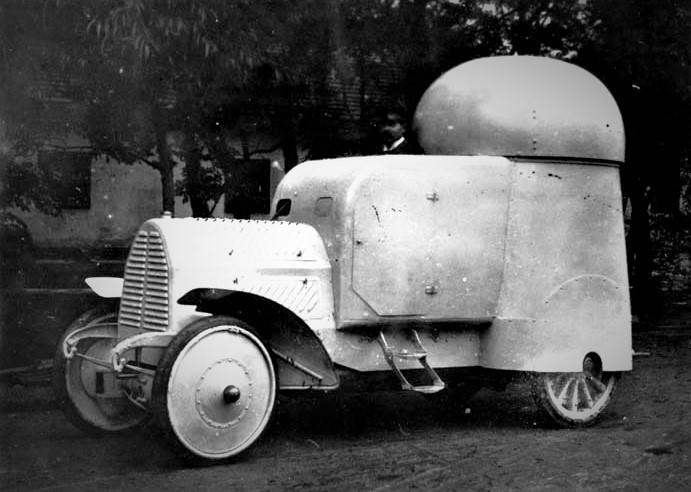

The Austro-Daimler Panzerautomobil (1904) was the world’s first fully enclosed, four-wheel-drive armored car. Designed by Paul Daimler, it featured a revolutionary 360-degree rotating turret armed with a 7.7mm Maxim machine gun. Its 4mm nickel-steel hull protected a three-man crew, including a driver and commander who sat on adjustable seats that could be raised for visibility or lowered for combat. Despite reaching 45 km/h and offering superior off-road mobility, it was rejected after its loud engine panicked cavalry horses during a 1906 demonstration before Emperor Franz Joseph I, who dismissed the machine as militarily useless.

- Characteristics:
- Type: Armored Car
- Weight: 5 tons
- Crew: 3
- Armament: 2x 7.7mm Maxim machine guns
- Speed: 29 km/h